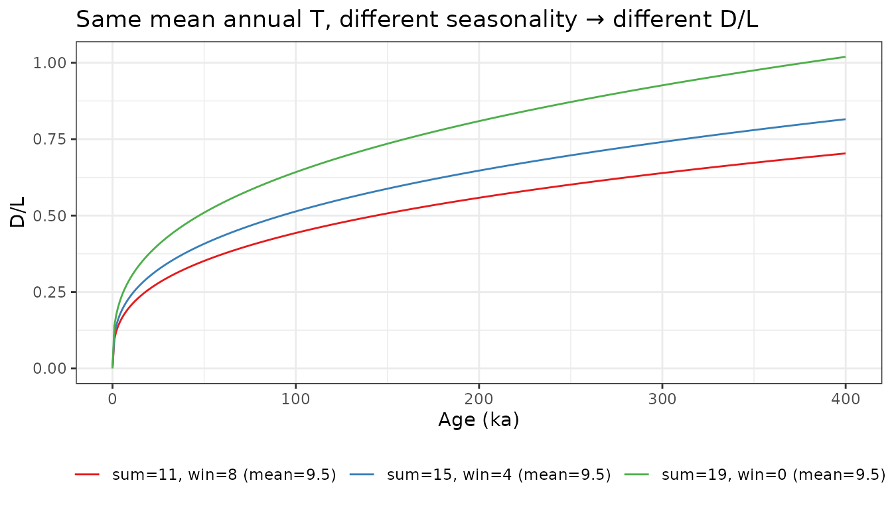
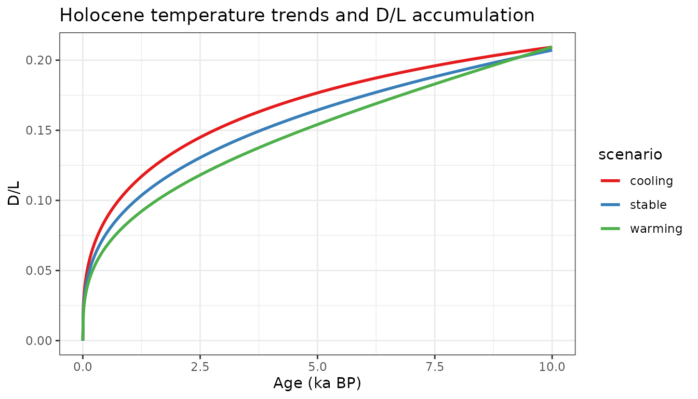

The Arrhenius equation
Amino acid racemization is a temperature-dependent chemical reaction. The rate constant at temperature (Kelvin) follows the Arrhenius equation:
The arrhenius() function implements this with literature
defaults
(,
kcal/mol):
T_C <- seq(-5, 25, by = 1)
kt <- arrhenius(Temp = T_C + 273)
plot(T_C, kt, type = "l", xlab = "Temperature (°C)", ylab = "Rate constant k",
main = "Arrhenius rate constant for isoleucine epimerization")The exponential dependence on means small temperature differences have large effects on racemization rate — a 5°C warming roughly doubles near lake bottom-water temperatures.
The power-law linearization
Racemization is integrated in space rather than space (the Bada linearization). This converts the sigmoidal D/L accumulation curve into a linear one, making the relationship tractable:
dT <- 10 # 10-year timestep
age <- seq(0, 400, by = dT) / 1000 # ka
# Accumulate racemization at constant 5°C
kt <- arrhenius(Temp = 5 + 273)
Rx <- cumsum(c(0, rep(dRacPL(kt, dT), length(age) - 1)))
data.frame(age_ka = age, Rx = Rx, DL = Rx^(1/3)) |>
(\(d) {
par(mfrow = c(1, 2))
plot(d$age_ka, d$Rx, type = "l", xlab = "Age (ka)", ylab = expression((D/L)^x),
main = "Linear in power-law space")
plot(d$age_ka, d$DL, type = "l", xlab = "Age (ka)", ylab = "D/L",
main = "Sigmoidal in D/L space")
par(mfrow = c(1, 1))
})()Effect of seasonality
Because the Arrhenius relationship is nonlinear (exponential in ), two climates with the same mean annual temperature but different seasonal amplitudes accumulate different D/L values. Warmer summers contribute disproportionately more than cooler winters subtract (Jensen’s inequality).
dT <- 1000
age <- seq(0, 400000, by = dT) / 1000
# Three scenarios with the same mean annual T = 9.5°C
scenarios <- list(
list(sumT = 15, winT = 4, label = "sum=15, win=4 (mean=9.5)"),
list(sumT = 19, winT = 0, label = "sum=19, win=0 (mean=9.5)"),
list(sumT = 11, winT = 8, label = "sum=11, win=8 (mean=9.5)")
)
res <- lapply(scenarios, function(s) {
Rx <- 0
for (i in 2:length(age)) {
Rx[i] <- Rx[i-1] +
dRacPL(arrhenius(Temp = s$sumT + 273), dT / 2) +
dRacPL(arrhenius(Temp = s$winT + 273), dT / 2)
}
data.frame(age_ka = age, DL = Rx^(1/3), seasonality = s$label)
})
do.call(rbind, res) |>
ggplot(aes(x = age_ka, y = DL, color = seasonality)) +
geom_line() +
scale_color_brewer(palette = "Set1") +
labs(x = "Age (ka)", y = "D/L", color = NULL,
title = "Same mean annual T, different seasonality → different D/L") +
theme_bw() +
theme(legend.position = "bottom")
At 400 ka, the high-seasonality scenario (sum=19/win=0) has accumulated noticeably more racemization than the low-seasonality scenario (sum=11/win=8), even though the mean annual temperature is identical. This is why the model treats summer and winter half-years separately.
Of course if we’re looking at lake sediments, it’s hard to get this much seasonality the water, and especially the accumulating sediment damp the variability and push everything towards mean annual temperature.
Holocene temperature trend sensitivity
How well can D/L distinguish between different Holocene temperature histories? Here we compare cooling, stable, and warming summer temperature trends over 10 ka with winter temperature held constant at 4°C:
dT <- 10
age <- seq(0, 10000, by = dT) / 1000
winT <- rep(4, length(age))
trends <- list(
list(sumT = seq(15, 10, length.out = length(age)), label = "cooling"),
list(sumT = rep(12.5, length(age)), label = "stable"),
list(sumT = seq(10, 15, length.out = length(age)), label = "warming")
)
res <- lapply(trends, function(tr) {
Rx <- 0
for (i in 2:length(age)) {
Rx[i] <- Rx[i-1] +
dRacPL(arrhenius(Temp = tr$sumT[i] + 273), dT / 2) +
dRacPL(arrhenius(Temp = winT[i] + 273), dT / 2)
}
data.frame(age_ka = age, DL = Rx^(1/3), scenario = tr$label)
})
do.call(rbind, res) |>
ggplot(aes(x = age_ka, y = DL, color = scenario)) +
geom_line(linewidth = 1) +
scale_color_brewer(palette = "Set1") +
labs(x = "Age (ka BP)", y = "D/L",
title = "Holocene temperature trends and D/L accumulation") +
theme_bw()
All three scenarios have the same mean annual temperature over the interval, yet their D/L profiles diverge. The cooling scenario (warm early Holocene) accumulates D/L faster at first, producing a higher final value than the warming scenario. This is the forward-model sensitivity that the Bayesian inversion framework is designed to exploit. ```